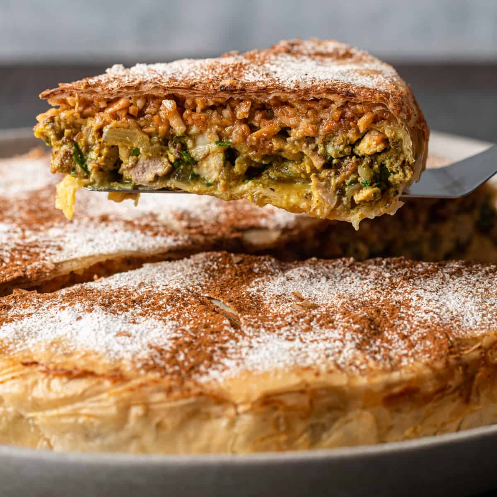

Pastilla
Un plat sucré‑salé marocain à base de pâte filo, de poulet et d’amandes.
Ingrédients :
- Feuilles de brick
- 1 poulet
- 200g d’amandes
- 2 oignons
- 4 œufs
- Coriandre, persil
- Épices (cannelle, gingembre, safran)
- Beurre
- Sucre glace
Préparation :
- Fais cuire le poulet avec les oignons et les épices, puis désosse et émiette la viande.
- Fais griller les amandes et broie‑les avec du sucre et de la cannelle.
- Dans un moule beurré, superpose des feuilles de brick, la viande, les amandes et les œufs battus.
- Referme la pastilla avec des feuilles de brick, badigeonne de beurre et fais cuire au four jusqu’à ce que ce soit doré.
- Saupoudre de sucre glace et de cannelle avant de servir.
← Retour à l'accueil